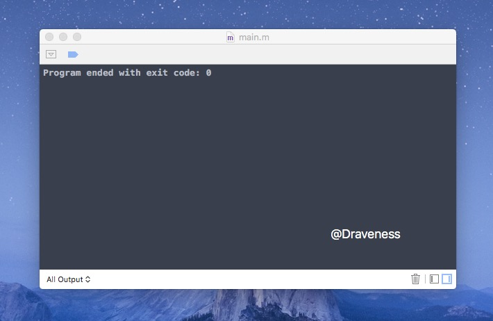
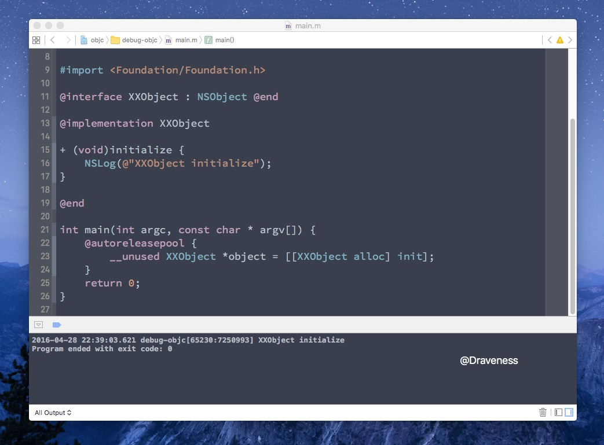
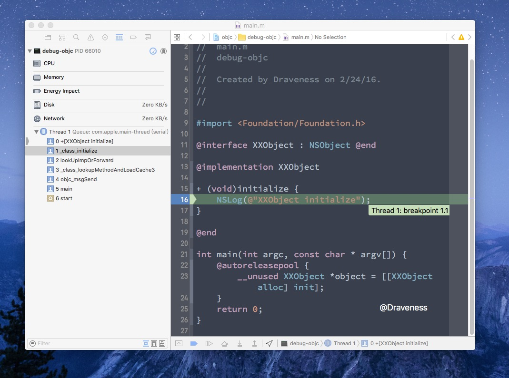
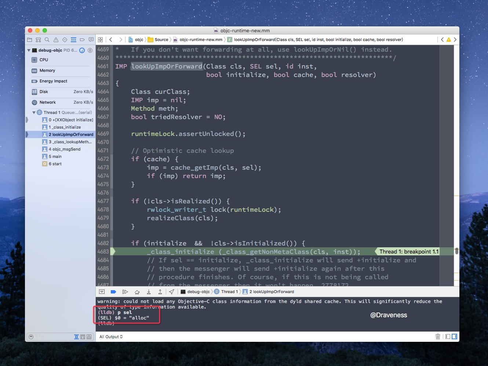
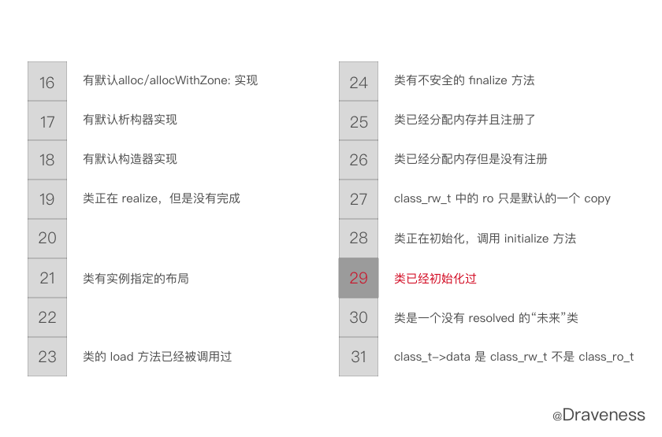
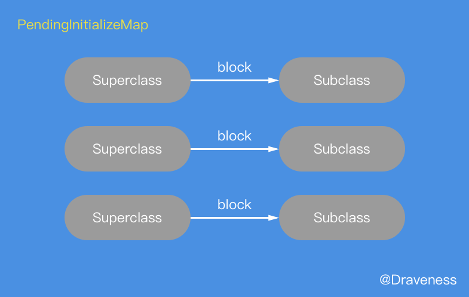

懒惰的 initialize 方法
因为 ObjC 的 runtime 只能在 Mac OS 下才能编译，所以文章中的代码都是在 Mac OS，也就是
x86_64架构下运行的，对于在 arm64 中运行的代码会特别说明。
写在前面
这篇文章可能是对 Objective-C 源代码解析系列文章中最短的一篇了，在 Objective-C 中，我们总是会同时想到 load、initialize 这两个类方法。而这两个方法也经常在一起比较：
在上一篇介绍 load 方法的文章中，已经对 load 方法的调用时机、调用顺序进行了详细地分析，所以对于 load 方法，这里就不在赘述了。
这篇文章会假设你知道：假设你是 iOS 开发者。
本文会主要介绍：
initialize方法的调用为什么是惰性的- 这货能干啥
initialize 的调用栈
在分析其调用栈之前，首先来解释一下，什么是惰性的。
这是 main.m 文件中的代码：
#import <Foundation/Foundation.h>
@interface XXObject : NSObject @end
@implementation XXObject
+ (void)initialize {
NSLog(@"XXObject initialize");
}
@end
int main(int argc, const char * argv[]) {
@autoreleasepool { }
return 0;
}
主函数中的代码为空，如果我们运行这个程序：

你会发现与 load 方法不同的是，虽然我们在 initialize 方法中调用了 NSLog。但是程序运行之后没有任何输出。
如果，我们在自动释放池中加入以下代码：
int main(int argc, const char * argv[]) {
@autoreleasepool {
__unused XXObject *object = [[XXObject alloc] init];
}
return 0;
}
再运行程序：

你会发现，虽然我们没有直接调用 initialize 方法。但是，这里也打印出了 XXObject initialize 字符串。
initialize只会在对应类的方法第一次被调用时，才会调用。
我们在 initialize 方法中打一个断点，来查看这个方法的调用栈：

0 +[XXObject initialize]
1 _class_initialize
2 lookUpImpOrForward
3 _class_lookupMethodAndLoadCache3
4 objc_msgSend
5 main
6 start
直接来看调用栈中的 lookUpImpOrForward 方法，lookUpImpOrForward 方法只会在向对象发送消息，并且在类的缓存中没有找到消息的选择子时才会调用，具体可以看这篇文章，从源代码看 ObjC 中消息的发送。
在这里，我们知道 lookUpImpOrForward 方法是 objc_msgSend 触发的就够了。

在 lldb 中输入 p sel 打印选择子，会发现当前调用的方法是 alloc 方法，也就是说，initialize 方法是在 alloc 方法之前调用的，alloc 的调用导致了前者的执行。
其中，使用 if (initialize && !cls->isInitialized()) 来判断当前类是否初始化过：
bool isInitialized() {
return getMeta()->data()->flags & RW_INITIALIZED;
}
当前类是否初始化过的信息就保存在元类的
class_rw_t结构体中的flags中。
这是 flags 中保存的信息，它记录着跟当前类的元数据，其中第 16-31 位有如下的作用：

flags 的第 29 位 RW_INITIALIZED 就保存了当前类是否初始化过的信息。
_class_initialize 方法
在 initialize 的调用栈中，直接调用其方法的是下面的这个 C 语言函数：
void _class_initialize(Class cls)
{
Class supercls;
BOOL reallyInitialize = NO;
// 1. 强制父类先调用 initialize 方法
supercls = cls->superclass;
if (supercls && !supercls->isInitialized()) {
_class_initialize(supercls);
}
{
// 2. 通过加锁来设置 RW_INITIALIZING 标志位
monitor_locker_t lock(classInitLock);
if (!cls->isInitialized() && !cls->isInitializing()) {
cls->setInitializing();
reallyInitialize = YES;
}
}
if (reallyInitialize) {
// 3. 成功设置标志位，向当前类发送 +initialize 消息
_setThisThreadIsInitializingClass(cls);
((void(*)(Class, SEL))objc_msgSend)(cls, SEL_initialize);
// 4. 完成初始化，如果父类已经初始化完成，设置 RW_INITIALIZED 标志位，
// 否则，在父类初始化完成之后再设置标志位。
monitor_locker_t lock(classInitLock);
if (!supercls || supercls->isInitialized()) {
_finishInitializing(cls, supercls);
} else {
_finishInitializingAfter(cls, supercls);
}
return;
} else if (cls->isInitializing()) {
// 5. 当前线程正在初始化当前类，直接返回，否则，会等待其它线程初始化结束后，再返回
if (_thisThreadIsInitializingClass(cls)) {
return;
} else {
monitor_locker_t lock(classInitLock);
while (!cls->isInitialized()) {
classInitLock.wait();
}
return;
}
} else if (cls->isInitialized()) {
// 6. 初始化成功后，直接返回
return;
} else {
_objc_fatal("thread-safe class init in objc runtime is buggy!");
}
}
方法的主要作用自然是向未初始化的类发送 +initialize 消息，不过会强制父类先发送 +initialize。
强制未初始化过的父类调用
initialize方法if (supercls && !supercls->isInitialized()) { _class_initialize(supercls); }通过加锁来设置
RW_INITIALIZING标志位monitor_locker_t lock(classInitLock); if (!cls->isInitialized() && !cls->isInitializing()) { cls->setInitializing(); reallyInitialize = YES; }成功设置标志位、向当前类发送
+initialize消息((void(*)(Class, SEL))objc_msgSend)(cls, SEL_initialize);完成初始化，如果父类已经初始化完成，设置
RW_INITIALIZED标志位。否则，在父类初始化完成之后再设置标志位monitor_locker_t lock(classInitLock); if (!supercls || supercls->isInitialized()) { _finishInitializing(cls, supercls); } else { _finishInitializingAfter(cls, supercls); }如果当前线程正在初始化当前类，直接返回，否则，会等待其它线程初始化结束后，再返回，保证线程安全
if (_thisThreadIsInitializingClass(cls)) { return; } else { monitor_locker_t lock(classInitLock); while (!cls->isInitialized()) { classInitLock.wait(); } return; }初始化成功后，直接返回
return;
管理初始化队列
因为我们始终要保证父类的初始化方法要在子类之前调用，所以我们需要维护一个 PendingInitializeMap 的数据结构来存储当前的类初始化需要哪个父类先初始化完成。

这个数据结构中的信息会被两个方法改变：
if (!supercls || supercls->isInitialized()) {
_finishInitializing(cls, supercls);
} else {
_finishInitializingAfter(cls, supercls);
}
分别是 _finishInitializing 以及 _finishInitializingAfter，先来看一下后者是怎么实现的，也就是在父类没有完成初始化的时候调用的方法：
static void _finishInitializingAfter(Class cls, Class supercls)
{
PendingInitialize *pending;
pending = (PendingInitialize *)malloc(sizeof(*pending));
pending->subclass = cls;
pending->next = (PendingInitialize *)NXMapGet(pendingInitializeMap, supercls);
NXMapInsert(pendingInitializeMap, supercls, pending);
}
因为当前类的父类没有初始化，所以会将子类加入一个数据结构 PendingInitialize 中，这个数据结构其实就类似于一个保存子类的链表。这个链表会以父类为键存储到 pendingInitializeMap 中。
NXMapInsert(pendingInitializeMap, supercls, pending);
而在父类已经调用了初始化方法的情况下，对应方法 _finishInitializing 的实现就稍微有些复杂了：
static void _finishInitializing(Class cls, Class supercls)
{
PendingInitialize *pending;
cls->setInitialized();
if (!pendingInitializeMap) return;
pending = (PendingInitialize *)NXMapGet(pendingInitializeMap, cls);
if (!pending) return;
NXMapRemove(pendingInitializeMap, cls);
while (pending) {
PendingInitialize *next = pending->next;
if (pending->subclass) _finishInitializing(pending->subclass, cls);
free(pending);
pending = next;
}
}
首先，由于父类已经完成了初始化，在这里直接将当前类标记成已经初始化，然后递归地将被当前类 block 的子类标记为已初始化，再把这些当类移除 pendingInitializeMap。
小结
到这里，我们对 initialize 方法的研究基本上已经结束了，这里会总结一下关于其方法的特性：
initialize的调用是惰性的，它会在第一次调用当前类的方法时被调用- 与
load不同，initialize方法调用时，所有的类都已经加载到了内存中 initialize的运行是线程安全的- 子类会继承父类的
initialize方法
而其作用也非常局限，一般我们只会在 initialize 方法中进行一些常量的初始化。
参考资料
Follow: @Draveness